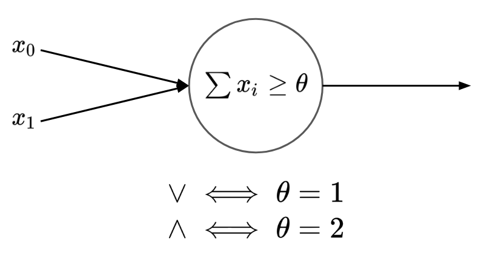
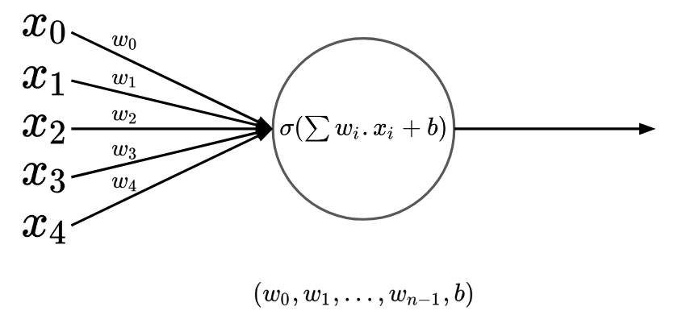

Think!
Music of the chapter: One is glad to be of service - By April Rain
The Game of Life
The Game of Life is a very simple environment and set of rules in which creatures evolve. It was created by the famous mathematician, John Horton Conway to demonstrate, as its name suggests, how a living creature can evolve in a simple environment with simple rules. The model is straightforward. It is a two-dimensional infinite plane of squares, in which each square can be either on or off. Conway’s artificial world has 4 rules:
- Any live cell with fewer than two live neighbours dies, as if by underpopulation.
- Any live cell with two or three live neighbours lives on to the next generation.
- Any live cell with more than three live neighbours dies, as if by overpopulation.
- Any dead cell with exactly three live neighbours becomes a live cell, as if by reproduction.
The state of the world in each timestamp in Conway’s Game of Life is purely dependent on previous state of the game.
The struggles in building artificial creatures has a long story, but the very first recorded design of a humanoid robot was done in around 1495 by the famous italian polymath, Leonardo Da Vinci.
If you are here to learn about artificial intelligence algorithms, I’m afraid to say you are in the wrong place. We are mostly going to learn about biological inspired algorithms for reaching AGI, because I believe nature has the answers for most of the questions already.
Long story short, interesting things can emerge as a result of many things gathering together, making “complex” system. People have written many books in this matter, in order to amaze you by the fact that intelligence can evolve by connecting many simple things to each other, but here I assume that you are already amazed and want to know how to actually build those stuff?
I would like to remind you the first chapter, where we claimed that interesting things can happen when cause and effect chains of the same type are connected together. That’s also the building block of a computer, a lot of logic gates connect together to cause desired behaviors. Interestingly, a human/biological brain is also similar to a logical circuits and digital computers in some ways. A lot of smaller units called neurons are connected together, leading to behaviors we typically call intelligence. There is a huge difference between a digital circuit and a biological brain though. A biological brain is made through the process of evolution, while a digital computer is carefully designed and made by a human, baked on pieces of silicone. When you design a digital computer, you exactly know what you want from it. You want it to make your life easier by running calculations and algorithms that take thousands of years when done by hand. When you do know what you exactly want from something, you can organize it into pieces, where each piece does one and only one independent thing very well, and then connect the solutions of subproblems together, solving the original problem. In case of a digital computer, the subproblems are:
- Storing data -> FlipFlop circuits
- Doing math -> Adder circuits
- Running instructions -> Program Counters
- …
The fact that the original solution is a combination of solutions of subproblems, means that the solution does not have a symmetric structure. By symmetric, I mean you can’t expect the part that solves problem A to be also able to solve problem B. You can’t expect a memory-cell to be able to add two numbers. Although they both are logical circuits that accept electrical causes as inputs and produce electrical effects as outputs (And thus they can connect to each other), they have whole entirely different structures.
As humans, it is difficult for us to discover and design decentralized solutions for problems, while it is easy for us to break the problem into subproblems, and find solutions for the subproblems instead.
Interestingly, it’s completely the way around for the nature. It’s much easier for the nature to design decentralized solutions for the problems, but it’s hard for it to break the problem into subproblems, and solve the original problem by solving the subproblems.
Perhaps these are all the reasons why biological brains have very solid, symmetrical structures with complex and magical behaviors and why digital computers are very organized and easy to analyze. I would like to call biological brains and digital computers as dynamic brains and static brains respectively.
Let’s define a static brain as a network of gates that are static and do not change their behaviors over time. While a dynamic brain is a network of gates in which the gates themselves can change their behavior and turn into other gates. A static brain is a well organized brain designed by an intelligent creature, in which each part does exactly one thing and cannot change its original behavior when needed (E.g An AND gate cannot change into an OR gate), while a dynamic brain is a network of general-purpose gates evolved by the nature to solve more general problems (E.g. maximizing a goal, like survival, pleasure, etc).
An AND gate inside a computer can only act as an AND gate. It can’t change itself to an OR gate when needed. A structure like this may seem boring in the first place, since it can only do one thing and can’t change its behavior over time (The neurons/gates in a biological brain can transform, leading to different behaviors). But we can actually bring some flexibility and ability to learn by adding a separate concept known as a memory, which can contain a program and an state. The static circuit’s only ability is to fetch an instruction from the memory, and change the state of the system from A to B, per clock cycle. The system’s ability to learn comes from it’s ability to store an state.
In a dynamic brain on the other hand, the learning can happen inside the connections. There isn’t a separate module known as memory in a dynamic brain, but the learning happens when the connections between the neurons and the neurons themselves transform. If we are trying to build an artificial general intelligence, it might make more sense to try to mimick the brain instead of trying to fake intelligence by putting conditional codes that we ourselves have designed.
Unfortunately, we are not technologically advanced enough to build dynamic brains, but we can emulate a dynamic brain inside an algorithm that can run on a static brain. The dynamic gates will be imaginary entities inside a digital memory that can trigger other imaginary gates.
Tunable gates
In order to have a solid and symmetric brain, which is able to learn without losing its uniform shape, we’ll need cause/effect gates that are general purpose and can change their behavior.
We can model and-gate as a continuous function on floating point values! We can design a function such that returns 0 by default and approaches 1 only when both its input value are close to 1.

Why modelling a gate as a floating point function is beneficial for us? Because we can take derivative of a continuous function!

Once upon a time, two nobel prize winners were studying brain cells 1873
Myserious black boxes
Neural networks seem to be blackboxes that can learn anything. It has been proven that they can see, understand or even reason about stuff. Neural Network are known to be universal function approximators. Given some samples of inputs/outputs of a function, neural networks may learn that function and try to predict correct outputs, given new inputs, inputs they have never seen before.
Before feeding a neural network your input data, you have to convert it into numbers. You can encode them anyway you want, and then feed them to a neural network (Which will give you some other numbers), and you may again iterpret the numbers anyway you want, and you can make the network “learn” the way you encode/decode data and try to predict correct outputs given inputs.
Some example encodings:
- Given the location, area and age of a house, predict its price
There are many ways you can encode a location into numbers:
- Convert it to two floating point numbers, longitude and latitude.
- Assume there are \(n\) number of locations, feed the location as a \(n\) dimensional tuple, where \(i\)th elements shows how close the actual location is to the predefined locaiton.
The area/age could also be fed:
- Directly as a number in \(mm^2\) or years
- Interpolated between 0 to 1 (By calculating \(\frac{area}{area_{max}}\))
And just like the way we design an encoding for the inputs, we may also design a decoding algorithm for our output. After that, the neural network itself will find a mapping between input/output data based on the way we encode/decode our data.
Now, one of the most important challenges in designing neural networks that actually work, is to find a good encode/decode strategy for our data. If you encode/decode your data poorly, the network may never learn the function, no matter how big or powerful it is. For example, in case of location, it’s much easier for a neural network to learn the location of a house given a longitude/latitude!
A learning algorithm made by humans
Before getting into the details of backpropagation algorithm, let’s discuss the mathematical foundations of it first. If you have made it this far in this book without skipping any chapters, you are already familiar with “derivatives”, the code idea Newton used to invent his own perception of Physics and motion. Derivative of a function is basically a new function that gives you out the rate of change of the original function on any given point.
The formal definition of derivative is something like this:
\(\lim_{\epsilon \to 0}\frac{f(x+\epsilon)-f(x)}{\epsilon}\)
The “limit” part of the definition means that \(\epsilon\) must be a very small value. Based on this definition, we can numerically estimate the derivative of any function using this piece of Python:
def f(x):
return x * x
def deriv(f):
eps = 1e-5
def f_prime(x):
return (f(x + eps) - f(x)) / eps
return f_prime
f_prime = deriv(f)
print(f_prime(5))
Here, the deriv function accepts a single-parameter function and returns a new function that is its derivative (Based on the definition of derivative). The smaller the eps constant becomes, the more accurate our calculated derivatives will get. It’s interesting that making eps hugely smaller doesn’t make significant difference in the result of the derived function, and will only make it converge to a fixed value. In the given example, the result of f_prime(5) will get closer and closer to 10 as we make eps smaller.
Now, that’s not the only way to take the derivative of a function! If you try different xs on f_prime, you’ll soon figure out that f_prime is almost exactly equal with x * 2. If we are sure that this is true for all xs, we can define a shortcut version of f_prime function, and avoid dealing with epsilons and fat calculations. That’s a great optimization!
You can actually find out this shortcut function by substituting \(f(x)\) in the formal definition of derivative with the actual function. In case of \(f(x) = x^2\):
\(\lim_{\epsilon \to 0}\frac{(x+\epsilon)^2-x^2}{\epsilon}=\frac{x^2+2x\epsilon+\epsilon^2-x^2}{\epsilon}=\frac{2x\epsilon + \epsilon^2}{\epsilon} = 2x + \epsilon = 2x\)
Now, let’s imagine we have a set of different primitive functions (Functions that we know their derivatives)
\(\frac{df(g(x))}{dx} = \frac{df(g(x))}{dg(x)} \times \frac{dg(x)}{dx}\)
\(fog(x) = f’(g(x)) * g’(x)\)
def f(x):
return x * x
def g(x):
return 1 / x
def fog(x):
return f(g(x))
fog_prime = deriv(fog)
print(fog_prime(5))
f_prime = deriv(f)
g_prime = deriv(g)
print(g_prime(5) * f_prime(g(5)))
Derivative of the tunable gate
Remember our design of a tunable gate? We can formulate it using a math function:
def f(x, y, b):
if x + y > b:
return 1
else:
return 0
def sigmoid(x):
return 1 / (1 + math.exp(-x))
def f(x, y, b):
return sigmoid(x + y - b)
World’s tiniest gradient engine!
I would like to dedicate a section explaining Andrej Karpathy’s Micrograd, an ultra-simple gradient engine he designed from scratch which is theoritically enough for training any kind of neural network. His engine is nothing more than a single class named Value, which not only stores a value, but also keeps track of how that value is calculated (The operation and the operands). Here is the full code:
class Value:
""" stores a single scalar value and its gradient """
def __init__(self, data, _children=(), _op=''):
self.data = data
self.grad = 0
# internal variables used for autograd graph construction
self._backward = lambda: None
self._prev = set(_children)
self._op = _op # the op that produced this node, for graphviz / debugging / etc
def __add__(self, other):
other = other if isinstance(other, Value) else Value(other)
out = Value(self.data + other.data, (self, other), '+')
def _backward():
self.grad += out.grad
other.grad += out.grad
out._backward = _backward
return out
def __mul__(self, other):
other = other if isinstance(other, Value) else Value(other)
out = Value(self.data * other.data, (self, other), '*')
def _backward():
self.grad += other.data * out.grad
other.grad += self.data * out.grad
out._backward = _backward
return out
def __pow__(self, other):
assert isinstance(other, (int, float)), "only supporting int/float powers for now"
out = Value(self.data**other, (self,), f'**{other}')
def _backward():
self.grad += (other * self.data**(other-1)) * out.grad
out._backward = _backward
return out
def relu(self):
out = Value(0 if self.data < 0 else self.data, (self,), 'ReLU')
def _backward():
self.grad += (out.data > 0) * out.grad
out._backward = _backward
return out
def backward(self):
# topological order all of the children in the graph
topo = []
visited = set()
def build_topo(v):
if v not in visited:
visited.add(v)
for child in v._prev:
build_topo(child)
topo.append(v)
build_topo(self)
# go one variable at a time and apply the chain rule to get its gradient
self.grad = 1
for v in reversed(topo):
v._backward()
def __neg__(self): # -self
return self * -1
def __radd__(self, other): # other + self
return self + other
def __sub__(self, other): # self - other
return self + (-other)
def __rsub__(self, other): # other - self
return other + (-self)
def __rmul__(self, other): # other * self
return self * other
def __truediv__(self, other): # self / other
return self * other**-1
def __rtruediv__(self, other): # other / self
return other * self**-1
def __repr__(self):
return f"Value(data={self.data}, grad={self.grad})"
Typically, when you have two variables a and b and you add them together in a third variable c, the only thing stored in c is the result of addition of a and b:
a = 5
b = 6
c = a + b
But, let’s imagine a world where all values are stored within a Wrapper class, something like this:
a = Wrapper(5)
b = Wrapper(6)
c = a + b
Tensor
If you have had experience doing machine-learning stuff, you know that there is always some tensor processing library involved (Famous examples in Python are Tensorflow and PyTorch). Tensor is a fancy word for a multi-dimensional array, and tensor libraries provide you lots of functions and tools for manipulaing tensors and applying the backpropagation algorithms on them.
Tensor libraries are essential for building super-complicated neural networks. So let’s implement a tensor library for ourselves!
A tensor can be simply modeled as a piece of data on your memory which we assume has a particular shape.
As an example, consider the data: [1, 2, 3, 4, 5, 6]. There are multiple ways to interpret these data as multidimensional array:
- 6
[1, 2, 3, 4, 5, 6] - 6x1
[[1], [2], [3], [4], [5], [6]] - 1x6
[[1, 2, 3, 4, 5, 6]] - 3x2
[[1, 2], [3, 4], [5, 6]] - 2x3
[[1, 2, 3], [4, 5, 6]] - 1x2x3x1
[[[[1], [2], [3]], [[4], [5], [6]]]]
See? The data is always the same. It’s just the way we interpret it that makes different shapes possible. Given on that, we can implement a tensor as a Python class, holding a list of values as its data, and a tuple of numbers as its shape:
def shape_size(shape):
res = 1
for d in shape:
res *= d
return res
class Tensor:
def __init__(self, data, shape):
if len(data) != shape_size(shape):
raise Exception()
self.data = data
self.shape = shape
We can also make sure that the data and the shape are compatible by checking if data has same number of values as the size of the shape. (You can calculate the size of a shape by multiplying all of its dimension, as we did in shape_size function)
Let’s first add some static methods allowing us to generate tensors with constant values:
class Tensor:
# ...
@staticmethod
def const(shape, val):
return Tensor([val] * shape_size(shape), shape)
@staticmethod
def zeros(shape):
return Tensor.const(shape, 0)
@staticmethod
def ones(shape):
return Tensor.const(shape, 1)
It’s also very helpful to print a tensor according to its shape. We do this by first converting the tensor into a regular Python nested-list, and then simply converting it to string:
class Tensor:
# ...
def sub_tensors(self):
sub_tensors = []
sub_shape = self.shape[1:]
sub_size = shape_size(sub_shape)
for i in range(self.shape[0]):
sub_data = self.data[i * sub_size : (i + 1) * sub_size]
sub_tensors.append(Tensor(sub_data, sub_shape))
return sub_tensors
def to_list(self):
if self.shape == ():
return self.data[0]
else:
return [sub_tensor.to_list() for sub_tensor in self.sub_tensors()]
def __str__(self):
return str(self.to_list())
The sub_tensors function allows us to decompose a tensor into its inner tensors by removing its first dimension. As an example, it can convert a 4x3x2 tensor into a list containing four 3x2 tensors. Having this, we can implement a recursive function to_list which can convert a tensor into a nested-list by recursively converting its sub-tensors to lists.
Mathematical operations in tensor libraries are either element-wise operations that work on scalar values (E.g add/sub/mul/div) or operations that accept two-dimensional tensors (E.g matrix multiplication)
Element-wise operations, as they name suggest, perform the operation on the corresponding elements of two tensors. However, sometimes we can see people adding two tensors with different shapes and sizes with each other. How are those interpreted?
Examples:
3x4x2 + 4x2 = 3x4x24x2 + 3x4x2 = 3x4x25x3x4x2 + 4x2 = 5x3x4x25x3x4x2 + 3x4x2 = 5x3x4x25x1x4x2 + 3x4x2 = 5x3x4x25x1x4x2 + 3x1x2 = 5x3x4x2
Our algorithm:
- Add as many 1s as needed to the tensor with smaller number of dimensions so that the number of dimensions in both of them become equal. E.g. when adding a 5x1x4x2 tensor with a 3x1x2 tensor, we first reshape the second matrix to 1x3x1x2.
- Make sure the corresponding dimensions in both tensors are equal or at least on of them is 1. E.g it’s ok to add 5x4x3x2 tensor with a 4x3x2 or a 4x1x2 tensor, but it’s NOT ok to add it with a 4x2x2, because \(2 \neq 3\).
- Calculate the final shape by taking the maximum of corresponding dimensions.
This will be the Python code of the mentioned algorithm:
def add_shapes(s1, s2):
while len(s1) < len(s2):
s1 = (1,) + s1
while len(s2) < len(s1):
s2 = (1,) + s2
res = []
for i in range(len(s1)):
if s1[i] != s2[i] and s1[i] != 1 and s2[i] != 1:
raise Exception()
else:
res.append(max(s1[i], s2[i]))
return tuple(res)
Now that we have the shape of result tensor, it’s time to fill it according to the operation.
Gradient Engines
Our implementation of a tensor is ready, our next big step is now to implement a gradient engine. Don’t get scared by its name, a gradient engine is just a tool you can use to keep track of derivatives of you tensors, with respect to the last computation you perform on your tensors (Which typically shows you how far are the outputs of your network compared to the desired outputs)
Whenever you perform an operation on two tensors, you will get a new tensor. The gradients of tensors a and b is equal with the derivative of the output tensor with respect to each input tensor.
In a production scale neural-network libraries, such as Pytorch and Tensorflow, the building of computation graphs is done automatically. You can go ahead and add tensors and multiply them together using ordinary Python operators (+/-/*). This requires us to implement the magic functions of operators (E.g __add__) in a way such that the resulting tensor keeps track of it parent tensors and is able to change their gradient values when needed. For example, when performing c = a + b, the gradient values of a and b are both influenced by c, so we have to keep track of these relations somewhere. This is done automatically in fancy neural-net libraries. Here we aren’t going to make our implementation complicated and prefer to keep our code simple, tolerating some unfriendliness in tensor operations syntax. In our implementation, we assume there is a abstract class named Operator, which all tensor operations inherit from.
from abc import ABC, abstractmethod
class Operator(ABC):
def __init__(self):
pass
@abstractmethod
def run(self, inps: List[Tensor]) -> Tensor:
pass
@abstractmethod
def grad(self, inps: List[Tensor], out: Tensor) -> List[Tensor]:
pass
The run function performs the operation on inputs, and then gives us an output tensor. The grad function otherhand, calculates the gradients of inps, given inps and the gradient of the output tensor according to the network’s error (out_grad).
Let’s take a look at the implementation of the Add operation:
class Add(Operator):
def __init__(self):
pass
def run(self, inps: List[Tensor]) -> Tensor:
return inps[0] + inps[1]
def grad(self, inps: List[Tensor], out_grad: Tensor) -> List[Tensor]:
return [out_grad, out_grad]
The gradient of tensor \(x\) is the derivative of our error function with respect to \(x\).
\(\frac{dE}{dx}\)
It shows us the impact of changing the single tensor \(x\) on the total network error.
Assuming we already know the gradient of the error function with respect to the output of the tensor operation \(\frac{dE}{df(x, y)}\), we can calculate our desired value using the chain operation:
\(\frac{dE}{dx} = \frac{dE}{df(x, y)} \times \frac{df(x, y)}{dx}\)
In case of addition operation, the gradients can be calculated like this
- \(\frac{dE}{dx} = \frac{dE}{df(x, y)} \times \frac{df(x, y)}{dx} = \delta \times \frac{d(x + y)}{dx} = \delta \times 1 = \delta\)
- \(\frac{dE}{dy} = \frac{dE}{df(x, y)} \times \frac{df(x, y)}{dy} = \delta \times \frac{d(x + y)}{dy} = \delta \times 1 = \delta\)
Therefore, the grad function will just return [out_grad, out_grad] as its output!
I assume you already know the way derivation on scalar values work. Derivatives on tensors is also very similar to scalar, the difference is just that, the derivative will also be a tensor instead of an scalar.
Implementing gradient engines is not an easy task at all. A very tiny mistake in calculation of a gradient will invalidate all of the gradient in previous layers. Your neural network will keep training but will never converge to a satisfactory solution, and it’s almost impossible to tell which part of the calculations you did wrong.
There is a very simple debugging idea you can use for checking the correctness of your gradient calculations, which can come handy when developing deep learning libraries. It’s named the gradient check method, and it simply checks if the result of the gradient function is equal with the gradient calculated by hand!
In case of scalar values, the gradient check is something like this:
[TODO]
Language
Large Language Models are perhaps the most important invention of our decade (2020s). LLMs are impressive but they are still using a technology we have known and using for decades, so how we didn’t have them before? There are 2 important
- We didn’t know a perfect encoding/decoding strategy for text data
- We didn’t put enough hardware for training language models
Gate layers
Computation graphs
Different layers
Embedding
An embedding layer is basically a array which you can access its elements. It’s often used for converting words/tokens into \(k\)-dimensional vector of numbers. An embedding layer is always put as the first layer in a network, since its inputs are integer indices to elements of a table.
- Propagation:
Y=T[X] - Backpropagation:
dT[X]/dX += delta
As discussed before, sometimes the key to building a good neural network is choosing the way data is encoded/decoded. Since the beginning of the chapter, one of our most important goals was to build a language model. Many of the modern language models are nothing but word-predictors. (Given a list of words, predict the next word). In case of solving the problem using neural-networks, we have to somehow encode the list of words into some numbers that can be feeded to the network, and then interpret the output of the network (Which is a number itself), as a word.
Suppose that the language we are working with is a very simple one and has only 20 words, which are:
I, you, we, they, go, run, walk, say, sing, jump, think, poem, and, or, read, today, now, book, fast, song
Here are some simple sentences in this made-up language:
IrunfastyoureadbookwerunfastandIsingsong
Now the questions is, how can these sentences be feeded to a neural-network which can only perform numerical operations? How do we convert them into numbers?
A very naive encoding for this scenario is one-hot encoding.
One, but hot!
Sometimes, instead of a quantity, you would like to feed a selection among options to a neural-network (E.g a neural network that predicts the longevity of a human given his information. You can clearly see that some of the properties of a human can be quantified, like his/her age, weight and height, but some simply can’t). As an example, the gender of a person is not a quantity. In such situations, you can simply assign different numbers to different options and pass those numbers to the network. You can for example assign the number 0.25 for the option man, and number 0.5 for the option woman.
But is this the best way we can encode things to be fed to a network? You will soon figure out that your model will have a very hard time understanding what these numbers mean. That’s also the case with real humans. Imagine I tell you property X of person A is 0.25 while for person B is 0.5. You will probably try to interpret those numbers as a quantizable property of a human, but there really isn’t a meaningful mapping between a human’s gender and his gender. Neural networks are biologically inspired structures, so if it’s hard for us to interpret numbers as options, there is a high chance that neural networks can’t do it well too.
There is a better way for feeding these kind of information to a neural network, instead of mapping the property to a single number and pass that number through a single neuron to our network, we can have one neuron per option, each specifying the presence of that option in the sample data. In case of our example, assuming we have 2 different genders, we will have two inputs, each input specifying manness and womaness of the data sample.
It’s one-hot! One of the inputs is hot (1) and the others are cold (0). It turns our that, networks trained this way perform much better than when the option is encoded as a random, unmeaningfull number. There is also another benefit training a network like this: Imagine a data sample where the man-ness and woman-ness properties are both 0.5. The network will be able to make some sense of it!
Ok, getting back to our example of a language-model, we can use one-hot encodings to encode each word of our sentence as a number. Assuming our model is able to predict the next word of a 10-word sentence, where each word is an option among 20 possible options, our model should accept \(10 \times 20\) numbers as input. That’s already a big number. The English language alone has approximately 170k words (According to Oxford English Dictionary), probably without considering many of the slangs and internet words! Imagine having to feed 170k numbers for every word you have in a sentence! This is obviously impractical.
Although one-hot encoding works perfectly when the options are limited, it doesn’t work in cases where we have millions of options (E.g a word in a language model). So we have to come up with a different solution.
Let’s get back to our dummy solution, where we assigned a number to each word. Let’s modify this method a bit: instead of mapping a word to a single number, let’s map them to multiple numbers, but in a smart way! Each of the numbers assigned to the words will have a certain meaning. The 1st dimension could specify if the word is a verb or a name, the 2nd dimension could specify if it has a positive or a negative feeling, the 3rd can specify if it’s about moving or staying still and so on. This is known as a word-embedding. A mapping between words to \(k\) dimensional numbers. Feeding a a neural networks this way saves a lot of neurons for us. We’ll only have to pass \(k\) numbers per each word!
Our language model was getting 10 words as an input and could predict the next word as an output. Imagine we train it and works very well. What will happen if we want to predict the next word of a 3 word sentence? For sure we can’t just put those 3 word on the first three input gates of our network and expect the output to be the fourth word. It is trained to only spit out the 11th word. In fact, the input/ouputs of language models are not like that. A language model of n inputs typically has also n outputs. And each output assumes the input has a certain length:
All you need is attention!
If you have heard of GPT style language models (The most famous one being ChatGPT) the letters GPT stand for Generatice Pretrained Transformer. Here I’m going to talk about a revolutionary neural-network architecture named Transformer, which was first introduced by X scientists in a paper titled: “All you need is attention”
Attention mechanism which has gave us humans the hope that someday we might have AGI, is nothing but a combination of neural-network layers, which happens to be very effective in learning and generating language data.
GPT
GPT is a successfull neural network architecture for language models. It uses the ideas discussed in the Transformer paper. These are the neural network layers used in a GPT:
Assuming the models accepts a sentence of maximum N tokens:
- The model gets
num_tokenstokens as its input. An integer tensor of shape[num_tokens] - The tokens are mapped to
embedding_degree-dimensional numbers, given a lookup-table known as the embedding table. The output of this step is a floating-point tensor of shape[num_tokens, embedding_degree]. - The output of step to goes through
num_layersmulti-head attention layers, where:- For each multi-head attention layers, there are
num_headsheads, wherenum_heads * head_size = embedding_degree- Each head accepts a
[num_tokens, embedding_degree]tensor. - The head is normalized with a LayerNorm function and the result is another
[num_tokens, embedding_degree]tensor. - The k, q and v vectors are calculated by multiplying the input tensor with three different
[embedding_degree, head_size]for that layer. The results are three[num_tokens, head_size]tensors. - k (
[num_tokens, head_size]) is multiplied with q^-1 ([head_size, num_tokens]) giving out a[num_tokens, num_tokens]tensor, telling us how related each word is with other words. - The upper-triangle of the matrix is zeroed out, so that the tokens cannot cheat.
- A softmax layer is applied to convert the importance-matrix into a probability distribution. Now we have a
[num_tokens, num_tokens]vector where sum of each row is 0. - The result is then multiplied with the v vector, allowing the most important tokens to send their “message” to the next attention layers. The output is a
[num_tokens, head_size]tensor.
- Each head accepts a
- Multiple attention-heads with different parameters are applied giving us
num_headsnumber of[num_tokens, head_size]tensors. By putting them besides each other, we’ll get a[num_tokens, embedding_degree]tensor. - The
[num_tokens, embedding_degree]tensor is projected into another[num_tokens, embedding_degree]tensor through a linear layer. - The output is added with the previous layer, resulting with another
[num_tokens, embedding_degree]tensor, to kind of give the next layer the opportunity to access the original data and attentioned data at the same time. - The output is normalized. Let’s call the result
add_atten_norm. - The output is mapped to a
[num_tokens, 4*embedding_degree]and again mapped to[num_tokens, embedding_degree]through 2 linear layers (This is the somehow the place where “thinking” processes happens). - The output is added to
add_atten_norm, normalized again, and then passed to the next layer.
- For each multi-head attention layers, there are
- The output is normalized.
- The
[num_tokens, embedding_degree]tensor is mapped to a[num_tokens, vocab_size]tensor through a linear layer. - The result is softmaxed, resulting to a
[num_tokens, vocab_size]probability distribution. Each telling you the probability of each token being the next token for each possible sentence-length. (There arenum_tokenspossible sentence-lengths, so we’ll havenum_tokensprobability distributions) - Based on the sentence-length, we will decide which row to select, which will give us a
[vocab_size]tensor. We will choose a token among most probable tokens and print it. - We will add the new word to the input, giving us a new input. We will go through the process all over again, getting a new token each time. The text will get completed little by little.
MatMul
Let’s say we have \(n\) neurons in a layer, each accepting the outputs of the \(m\) neurons in the previous layer. The neurons in the next layer are each calculating a weighed sum of all the neurons in the previous layer. Looking closely, you can see that the operation is not very different with a simple matrix multiplication!
Matrix multiplication is the most primitive layer used in neural networks. You use a matrix-multiplication layer when you have a layer of neurons where each neuron’s input is the weighed sum of all outputs of previous neurons.
- Propagation:
Y=MX - Backpropagation:
dY/dM += XanddY/dX += M
ReLU
ReLU is an activation function to provide non-linearty in a Neural-Network. It’s a better alternative for vanilla sigmoid function, since the sigmoid function’s closeness to zero can decrease the training speed a lot.
- Propagation:
Y=X if X > 0 else 0 - Backpropagation:
dY/dX += 1 if X > 0 else 0
LayerNorm
LayerNorm is a creative approach for fighting with a problem known as vanishing-gradients. Sometimes when you put plenty of layers in a network, a slight change in the first layers will have enormous impact in the output (Which causes the gradients of the early layers to be very small), or there are times when the early layers have very small impact on the outputs (The gradients will become very high, or explode, in this case). Layer-normalization is a technique by which you can decrease the probability of a vanishing/exploding gradients, by consistently keeping the output-ranges of your layers in a fixed range. This is done by normalizing the data flowing through the layers through a normalization function.
The layer accepts a vector of floating point numbers as input and gives out a vector with same size as output, where the outputs are the standardized version of inputs.
Softmax
Softmax layer is used to convert the outputs of a layer into a probability distribution (Making each output a number between 0 to 1, where sum of all outputs is equal with 1).
\(Y_i = \frac{e^{X_i}}{e^{X_0}+e^{X_1}+\dots+e^{X_{k-1}}}\)
In a softmax layer, each output element depends on the output of all neurons in the previous layer, therefore, the derivative of a softmax layer, is a matrix, so we have to calculate its Jacobian!
Mask
CrossEntropy
CrossEntropy is a strategy for calculating the error of a neural network, where. A CrossEntropy layer accepts a probability distribution as its input, therefore a cross-entropy layer comes after a Softmax layer. In a cross-entropy layer, error is minimized when the output probability of the desired output is 1 and all other outputs are zero. In this scheme, we expect the error of the network to be maximized when the output of the desired neuron is 0, and to be minimized when the output of that neuron is 1. Such behavior can be obtained with a function like \(\frac{1}{x}\) or \(-log(x)\)!
A cross-entropy layer accepts a probability distribution (A bunch of floating point numbers) as input, and produces a single floating point number, representing the error of the network, as its output. The error is defined as:
\(E=-log(X[t])\)
where \(T\) is the index of the desired class. When \(X[t]\) is 0, the error is \(\inf\), and when \(X[t]\) is 1, the error is \(0\). You might first think that we have to consider the outputs of other neurons too, when calculating the error of the network (E.g, we have to somehow increase the error, when the elements other than the one with index \(t\) are not zero, but this is not needed! Assuming that the input to an cross-entropy layer is a probability distribution, forcing the probability of the desired element to become 1, forces the probability of all other non-desired elements to become 0, automatically)
Such a strategy for calculating the error of the network forces the network to learn to select a single option among a set of options. Examples of such use cases are:
- Given a 2D array of pixels, decide if there is a cat, dog, or a human in the picture (An image classifier)
- Given an array of words, decide what word is the next word (A language-model)
Language
Vision
Our path towards Artificial General Intelligence
Here we are going to talk about a philosophical approach of building consciousness in computers.
So we have been doing years and years of research on things so called Artificial Intelligence and Machine Learning, but what I’m talking about here is Artificial General Intelligence, something more than a multilayer regression model used for classifying and prediction. Perhaps the reason we have had a giant progress in development of Machine Learning models is all about money. These things are useful in the world we live in, we can build self-driving cars, smart recommender systems and … We can’t just build a business out of a human-level intelligent system. (Edit: When I wrote this paragraph, LLMs were not as sophisticated as they are today! Things are very different now)
Learning is not enough, genetic matters
You can try teaching Kant Philosophy or General Theory of Relativity to your dog, but I bet it would be disappointing. The mere ability to learn is not enough, the way a brain is wired matters, and that only changes through what we call evolution.
Biological simulation isn’t the right path
Although researching on biological side of things could be helpful, but doing it excessively could
We are so close to AGI!
You can hear people saying that our computers can’t even simulate the brain of a bee. Humans are smart, nature is dumb, the only thing that is making nature superior than us in engineering self-aware creatures is its vast ability to experiment different random things. Nature can create amazing stuff, but nature is not good at optimizing things. Think of it this way:
The Environment
You want your lovely artificial creature to learn and do amazing things by himself? The first step is to give him the opportunity to do so! How can you expect a chatbot to magically understand the concept of self-awareness without giving it the chance to explore the world and distinguish himself with others? Humans are impressive and amazing, but the environment that was complex (yet not overly complicated) and creative enough that gave organisms the opportunity to evolve to the level of human mind is just brilliant. It’s not about how to build a brain, but more about how to build an appropriate environment where a brain can evolve.
Let’s act like a God
The very first thing we need for creation of a self-aware creature, is a goal. Simplest form of a goal is survival, which simply means, to exist. In order to make existence a goal, we need to put concepts and things which harms the existence of that creature. We can make the creature dependent on some concept and intentionally take it away from him. Let’s call that concept:
Look, but don’t touch. Touch, but don’t taste. Taste, but don’t swallow…
We can’t afford infinite randomness
The infinite monkey theorem states that a single monkey randomly hitting the keys of a keyboard for an infinite amount of time can write any given text, even complete works of Shakespear. But our computer resources, as opposed to the atoms in our universe, is limited. So we can’t build intelligence by bruteforcing simulated atoms in a simulated world!
Death, gene’s weapon for survival
There is no reason for a cell, organism or creature to get old and die, as soon as in some part of its code, it is programmed to restore itself by consuming the materials around him (aka food). But most of the animals die (There are some exceptions, some kind of Marjan in Japan never dies by aging), why that happens? Paradoxically, the death phenomenon can be an important reason why human-level intelligence exists! Only the genes who die after sometime, will survive. The population will boom in an unexpected way and that could lead to the extinction of that specy.
Charles Darwin was always wondering why depression exists.
Consciousness is a loop
There are several evidences supporting the idea, that consciousness is the result of a loop in our nervous system, created during the evolution. Simple creatures do not have it, and the loop gets stronger and stronger when we reach to homo-sapiens. A loop in the input/output gateways of our brain make the “thinking of thinking” phenomenon possible.
People with schizophrenia cannot distinguish between feedback inputs and environmental inputs, so they may hear sounds, that do not exist in real world, driving them crazy. Thinking is like talking without making sounds, and redirecting it back to your brain without hearing it. A healthy brain would expect to hear a sound whenever it talks. Whenever this expectation is somehow broken, the brain cannot recognize if the voice it is hearing is external or it is somebody else inside his brain. It is kind of brain’s failure in removing its own voice’s echo.
How to experiment self-awareness?
In an experiment known as the “rouge test,” mothers wiped a bit of rouge on the noses of their children and placed them in front of a mirror. Before 15 months, children look at the reflection and see a red spot on the nose in the mirror, but they don’t realize that the red spot is on their own nose. When children are between 15 and 24 months, they begin to realize that the reflection they see is their own, and they either point to the red nose or try to wipe away the rouge. In other words, they understand that the reflection in the mirror is more than a familiar face–it is their own face.
Last step, abstract thinking
Your creature is now able to find food, escape from dangers, communicate with others and be self-aware. Congratulations! You just built a dog! So what’s next? What makes homo-sapiens different with ordinary mammals? People say its our ability to think about things that do not exist. Abstract Thinking isn’t a MUST in our world to survive (That’s why most animals can’t write poems or do math in order to survive), but having it happened to be extremely helpful. Abstract Thinking helped us to unite under the name of
Evolution is decentralized
Humans have always had the dream of replicating themselves by building creatures that have the intellectualual abilities of a human (Or even beyond). You can see how much we fantasize about human-made intelligence in the books, paintings, movies and etc.